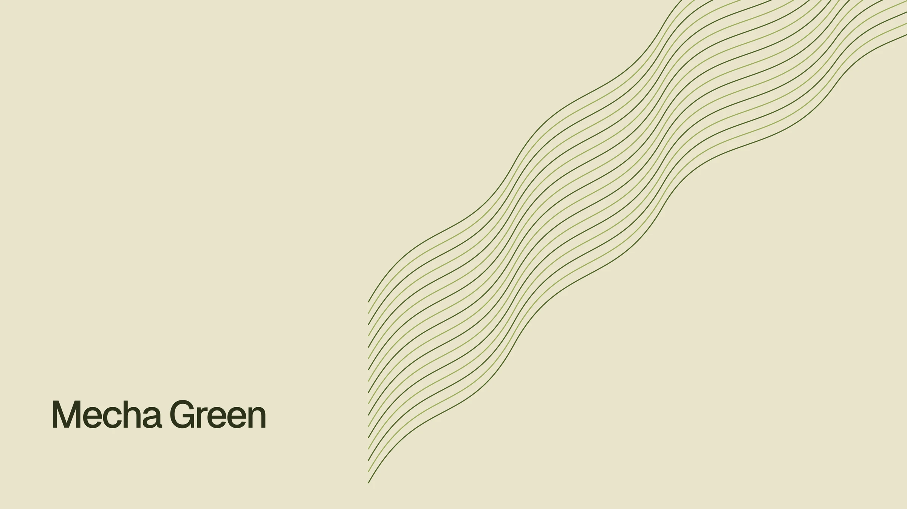
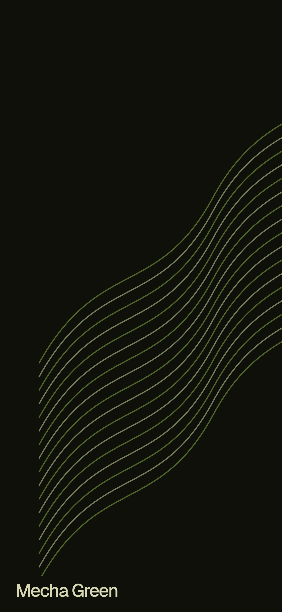
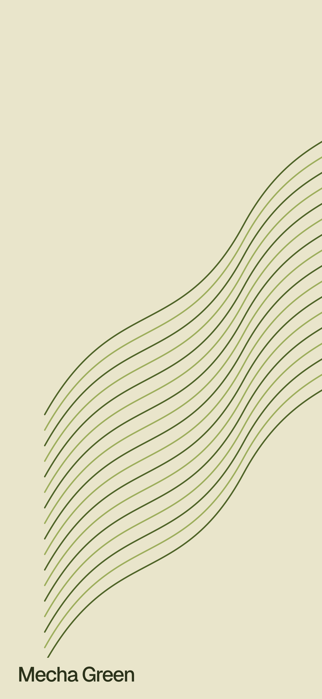
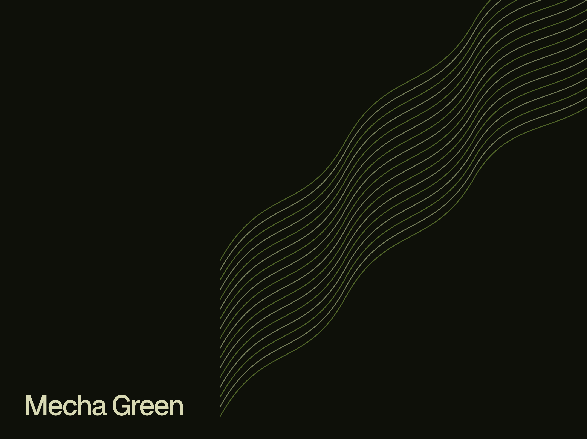
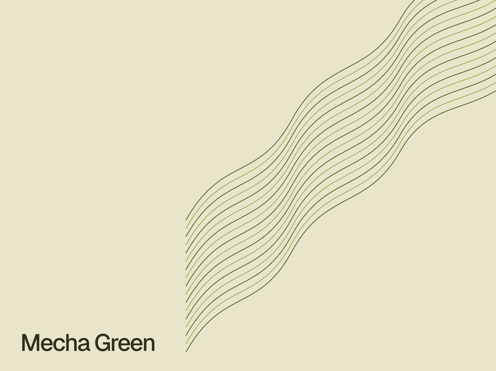

Omarchy theme · native 4K
Topography
for the desktop.
A flat, topographic identity in olive, sand and amber. Seven lossless 4K stills, six quiet live loops, and a complete theme for both sides of the day.
- Still resolution
- 3840 × 2160
- Live loops
- 12 × 8 sec
- Modes
- Dark + light
- Frame rate
- 60 fps

01 / The collection
Seven stills.
Two atmospheres.
Every contour is drawn in SVG and rendered at output resolution. No enlargement, no invented detail.


All seven designs
Desktop 4K pack
Lossless WebP, both dark and light. 3840 × 2160.
02 / In motion
Only the
contours move.
Eight-second seamless loops at 60 fps. The Geist wordmark stays fixed while the topographic lines drift. Bundled at native 4K; the web preview is a high-quality 1080p cut.
03 / Beyond the desktop
Same system.
Smaller glass.
The contours are recomposed for portrait phones and 4:3 tablets, then rendered at native device resolution. Seven designs in both modes, ready to download.


Mobile / 1440 × 3120
Pocket topography.
Portrait cuts for modern phones, with the wordmark placed inside the safe area and the contour field scaled to the screen.


Tablet / 2732 × 2048
Wide enough to breathe.
A 4:3 crop built from the same vector lines, with more room around the wordmark and a composition tuned for landscape tablets.
04 / Installation
Built into
Omarchy.
Install the standalone theme package, then apply it. The repo ships every wallpaper locally, so the theme stays fast and self-contained.
omarchy theme install https://github.com/sazardev/omarchy-mecha-green-theme
omarchy theme set "Mecha Green"Run omarchy theme update, then omarchy theme set "Mecha Green" to regenerate the active 4K snapshot.